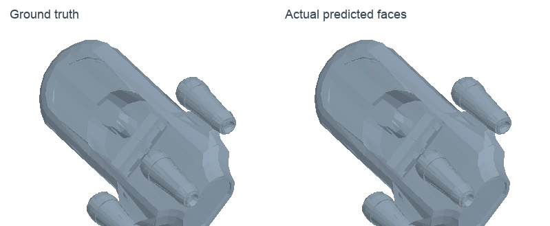
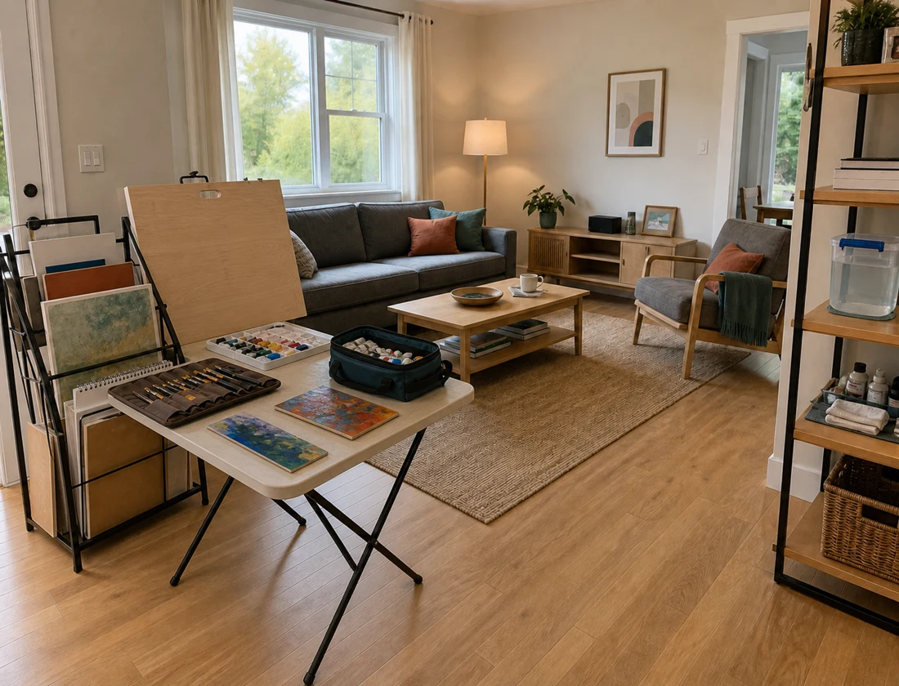

NEXUS: Topology VAE & Vertex Diffusion
Built PyTorch models for 3D topology reconstruction and point-cloud-conditioned vertex generation, together with training and visualization tools.
99.63% actual Face micro-F1 · 100 training meshes
UNIVERSITY OF SCIENCE AND TECHNOLOGY OF CHINA
I build and study systems that connect 3D perception, generation, and interaction.
I am an undergraduate in the School of Information Science and Technology at USTC (Class of 2024, expected graduation in 2028). My recent work includes topology reconstruction, point-cloud-conditioned vertex diffusion, and multi-agent scene generation.

Built PyTorch models for 3D topology reconstruction and point-cloud-conditioned vertex generation, together with training and visualization tools.
99.63% actual Face micro-F1 · 100 training meshes

 OriginalEdited
OriginalEdited
Built a multi-agent pipeline that turns persona descriptions into interior scenes and supports event-driven image editing, from spatial planning to image generation.
Shown: a generated artist’s living space and its edited version.
Participated as part of Night’s Watch in Track 1. Prepared the environment and dataset, reproduced a 3D perception baseline, and organized training, inference, and evaluation for functional-region understanding in indoor scenes.
Built RealSense D435i block detection and 3D localization, camera-to-arm coordinate transforms, and five-servo suction-grasp control. Completed hardware integration testing.
Implemented MobileNetV2 classification on FER2013 and compared accuracy and computational cost with ResNet, EfficientNet, and MAE-DFER.
Outside my projects, I’m a member of the USTC boxing team.
Python · C/C++ · PyTorch · Linux · Git · MuJoCo · STM32 · MATLAB